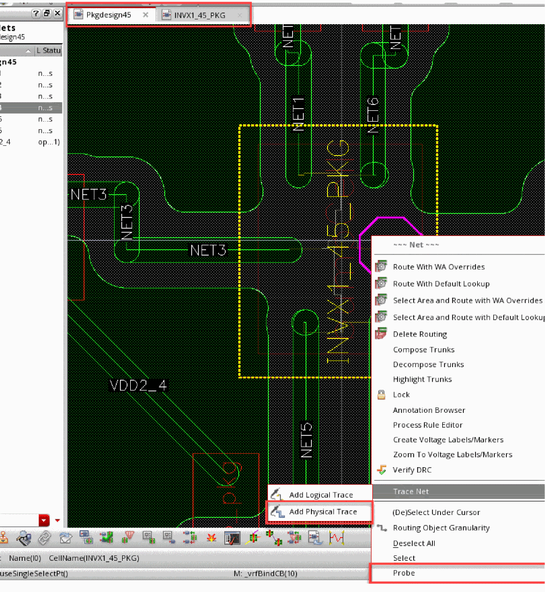

Net Tracing in Editing-In-Concert Mode
Multi-technology fabrics, such as dies and packages, can be traced for nets while editing-in-concert. Multiple traces are created from layers in a package to layers in a die.
To trace nets across multi-technology fabrics:
- Open a design in Edit-In-Concert mode.
- Select a net using the Navigator assistant.
-
Click Trace Net – Add Physical Trace in the context menu to trace through a die and package. Alternatively, you can use the
IntAddTraceSKILL function to create a trace starting from the specified figure or net name in the specified window.
 - Click Probe – Add in the context menu to make a net visible through color tracing. You can use Probe – Remove and Probe – Remove All to remove color tracing.
Related Topics
- IntAddTrace
- Edit-in-Concert
- Modify in Edit-in-Concert Mode
- Movement of Dies in Edit-in-Concert Mode
- Changes to TILP Parameters in Edit-in-Concert mode
- Change from Package view to Layout View
- Probing a Design in Edit-in-Concert Mode
Return to top